library("bayesrules") #data set: Pulse of the Nation
library("ggimage") #customize images for scatterpoint points
library("ggtext") #adorn ggplot text
library("gt") #great tables
library("infer") #streamlined code for inference tasks
library("janitor") #compute proportions easily
library("tidyverse") #tools for data wrangling and visualization
# school colors
princeton_orange <- "#E77500"
princeton_black <- "#121212"
# data set: Pulse of the Nation
data(pulse_of_the_nation)
pulse_df <- pulse_of_the_nation
# data set: SML 201 demographics survey
demo_df <- readr::read_csv("demographics_data.csv")
# data set: SML 201 probability perceptions survey
prob_df <- readr::read_csv("probability_perceptions.csv")
# Derek's helper functions
source("vdist.R")SML 201
NoteLibraries and Helper Functions
Start
Goal: Estimate unknown population statistics
Objective: Deploy and interpret confidence intervals
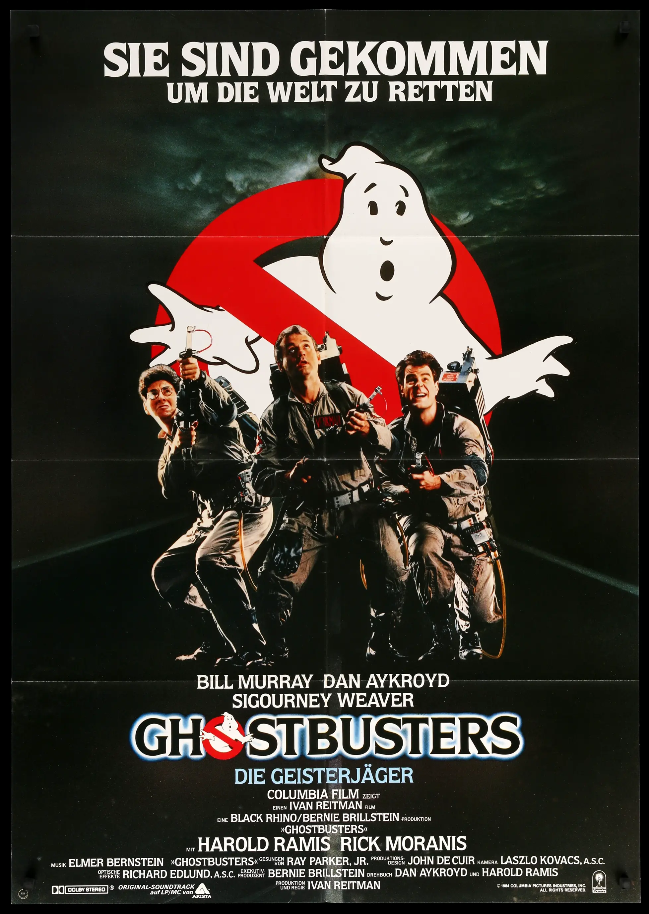
Old Methods
Scenario: Believe in Ghosts?
What proportion of people believe that ghosts exist?
source: Pulse of the Nation survey by Cards Against Humanity
Poll 1: September 2017
1000 observations
15 variables
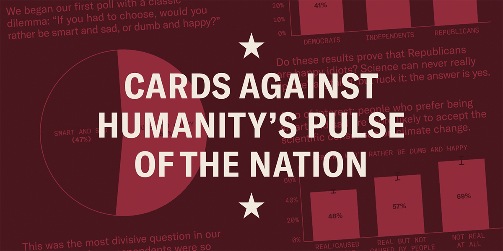
Normal Distribution
Walter Peck wants estimates to have at least 95 percent confidence!
# 2.5 and 97.5 percentiles
qnorm(c(0.025, 0.975))[1] -1.959964 1.959964vnorm(qnorm(c(0.025, 0.975)), section = "between") +
annotate("text", x = 0, y = 0.2, label = "95%",
color = "white", size = 15) +
labs(title = "Extracting a 95 Percent Interval",
x = "z") +
scale_x_continuous(breaks = c(-1.96, 1.96),
labels = c(-1.96, 1.96))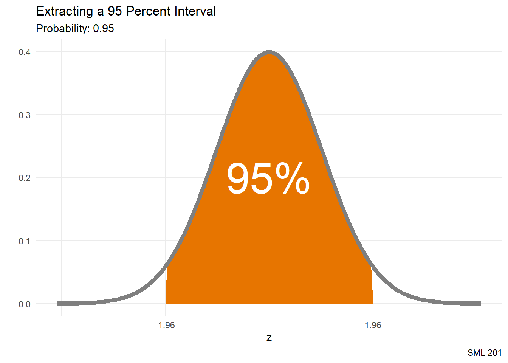
Sample Proportion
ghosts n percent
No 621 62.1%
Yes 379 37.9%
Total 1000 100.0%\[\hat{p} = 0.379\] \[n = 1000\]
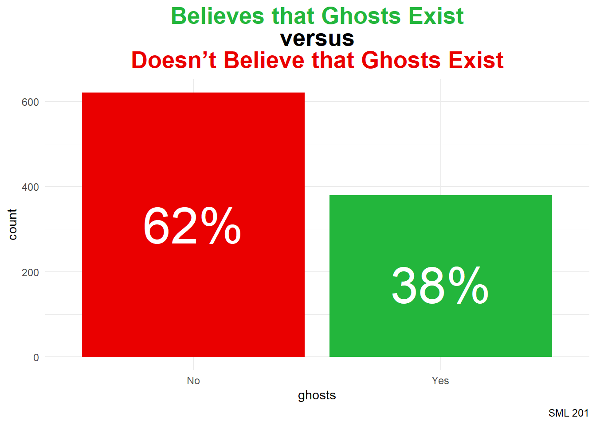
pulse_df |>
tabyl(ghosts) |>
adorn_totals("row") |>
adorn_pct_formatting()
title_string <- "<span style = 'color:#23b63c'>Believes that Ghosts Exist</span><br>versus<br><span style = 'color:#ea0000'>Doesn't Believe that Ghosts Exist</span>"
pulse_df |>
ggplot() +
geom_bar(aes(x = ghosts, fill = ghosts)) +
annotate("text", x = c("No", "Yes"), y = c(310, 170),
label = c("62%", "38%"),
color = "white", size = 15) +
labs(title = title_string,
caption = "SML 201") +
scale_fill_manual(values = c("#ea0000", "#23b63c")) +
theme_minimal() +
theme(legend.position = "none",
plot.title = element_markdown(hjust = 0.5,
face = "bold",
size = 20))Confidence Interval for a Proportion
\[\hat{p} \pm E, \quad\text{where } E = z_{\alpha/2}*\sqrt{\frac{\hat{p}(1 - \hat{p})}{n}} \text{ and } z_{\alpha/2} \approx 1.96\]
\[\left(0.3489, 0.4091\right)\]
# sample statistics
phat <- mean(pulse_df$ghosts == "Yes")
n <- sum(!is.na(pulse_df$ghosts))
# margin of error
E <- qnorm(0.975)*sqrt((phat*(1-phat))/n)
# confidence interval
phat + c(-1,1)*E[1] 0.3489314 0.4090686
NoteInference Interpretation
We are 95 percent confident that the true population proportion of Americans that believe in ghosts is in between 34.89 and 40.91 percent.
WarningDCP1
Scenario: How Old Are You?
Among the people that believe in ghosts, how old are you?
# A tibble: 2 × 3
ghosts xbar n
<fct> <dbl> <int>
1 No 50.3 621
2 Yes 48.0 379\[\bar{x} \approx 47.9525\] \[n = 379\]
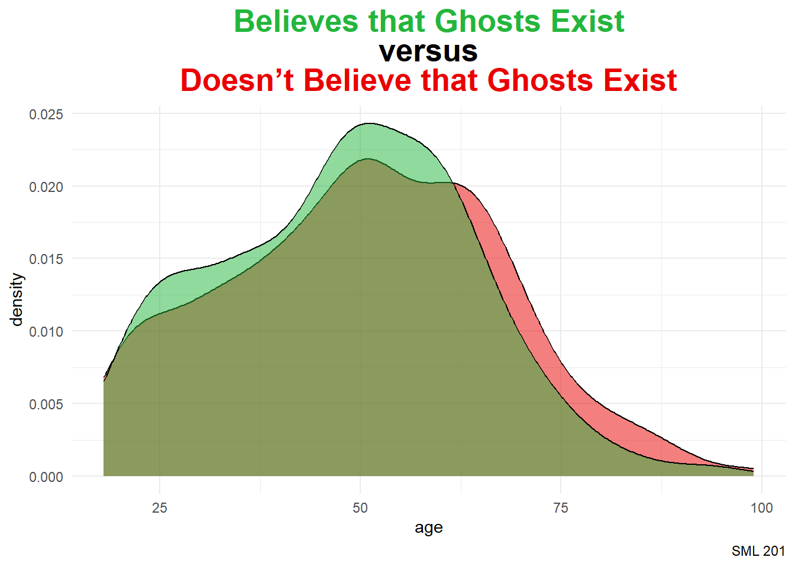
pulse_df |>
group_by(ghosts) |>
summarize(xbar = mean(age, na.rm = TRUE),
n = n())
title_string <- "<span style = 'color:#23b63c'>Believes that Ghosts Exist</span><br>versus<br><span style = 'color:#ea0000'>Doesn't Believe that Ghosts Exist</span>"
pulse_df |>
ggplot() +
geom_density(aes(x = age, fill = ghosts),
alpha = 0.5) +
labs(title = title_string,
caption = "SML 201") +
scale_fill_manual(values = c("#ea0000", "#23b63c")) +
theme_minimal() +
theme(legend.position = "none",
plot.title = element_markdown(hjust = 0.5,
face = "bold",
size = 20))Confidence Interval for a Mean
\[\bar{x} \pm E, \quad\text{where } E = t_{\alpha/2}*\frac{s}{\sqrt{n}}\]
\[\left(46.3651, 49.5399\right)\]
We are 95 percent confident that the true population mean age for people that believe ghosts exist is in between 46.37 and 49.54 years old.
# subset
ghosts_yes <- pulse_df |> filter(ghosts == "Yes")
# sample statistics
xbar <- mean(ghosts_yes$age, na.rm = TRUE)
s <- sd(ghosts_yes$age, na.rm = TRUE)
n <- sum(!is.na(ghosts_yes$age))
# margin of error (here: "df" are degrees of freedom)
E <- qt(0.975, df = n - 1)*s/sqrt(n)
# confidence interval
xbar + c(-1,1)*E[1] 46.36511 49.53991
NoteInference Interpretation
We are 95 percent confident that the true population mean age for people that believe ghosts exist is in between 46.37 and 49.54 years old.
Student t Distribution
The Student t distribution is an abstraction of the standard normal distribution that adjusts with wider tails to allow for more probability in the tails
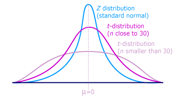
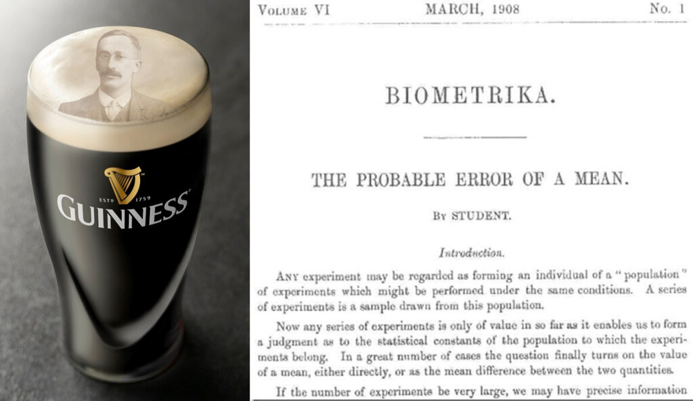
In advanced statistics, such as the adjusted \(R^{2}\) calculation for the coefficient of determination, the degrees of freedom are the difference between
- number of observations in the data
- number of independent variables being modeled
For this setting—estimating the true population mean—the degrees of freedom are simply
\[df = n - 1\]
WarningLeaving the t distribution behind
For these calculations
\[\bar{x} \pm E, \quad\text{where } E = t_{\alpha/2}*\frac{s}{n}\]
- rely more on summary statistics rather than all of the gathered data
- “degrees of freedom” is a rather convoluted notion
- t-distribution is itself an approximation
- leads to more reliance on abstract probability distributions
- departs from frequentist probability philosophy
- more useful before calculators and computers
Modern Methods
Tipinfer
The developers of the infer package (and similar in other programming languages) streamlined coding syntax for these statistical tasks
- eases programming
- leverages simulations
Scenario: Princeton Politics
The survey question was
On a scale of 0 to 100—with 0 = Democrat and 100 = Republican—where are your political leanings?
Bootstrap Distribution
set.seed(201)
bootstrap_distribution <- demo_df |>
specify(response = politics) |>
generate(reps = 1000, type = "bootstrap") |>
calculate(stat = "mean")Warning: Removed 29 rows containing missing values.Endpoints (Standard Error)
xbar <- mean(demo_df$politics, na.rm = TRUE)
se_ci <- bootstrap_distribution |>
get_confidence_interval(level = 0.95,
type = "se",
point_estimate = xbar)Visualization
bootstrap_distribution |>
visualize() +
shade_confidence_interval(endpoints = se_ci,
color = princeton_black,
fill = princeton_orange) +
labs(title = "Political Leanings of Princeton Students",
subtitle = "Spring 2026",
caption = "SML 201",
x = "0: Democrat ... 100: Republican") +
theme_minimal() +
xlim(0, 100)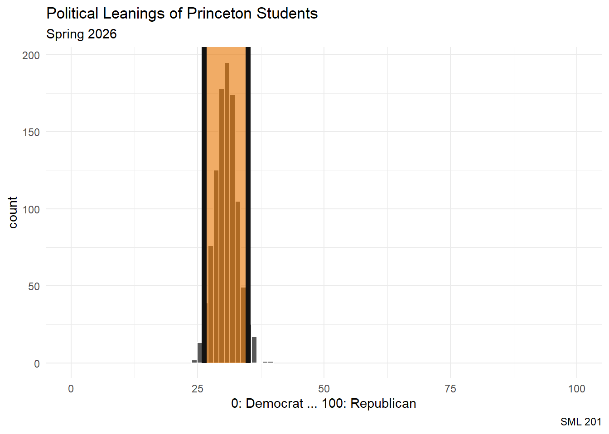
Inference
print(round(se_ci))# A tibble: 1 × 2
lower_ci upper_ci
<dbl> <dbl>
1 26 35In this survey question, “On a scale of 0 to 100—with 0 = Democrat and 100 = Republican—where are your political leanings?”, we are 95 percent confident that the true population mean for Princeton students is in between 26 and 35.
CautionDiscussion
This was a survey among SML 201 students
- not a representative or random sample of Princeton students
- self-reported data
WarningDCP2
Scenario: Pineapple on Pizza
The sample proportions (among those who were adamant) were
demo_df |>
filter(pineapple_pizza %in% c("No!", "Yes!")) |>
tabyl(pineapple_pizza) |>
adorn_totals("row") |>
adorn_pct_formatting() pineapple_pizza n percent
No! 49 46.2%
Yes! 57 53.8%
Total 106 100.0%Bootstrap Distribution
set.seed(201)
bootstrap_distribution <- demo_df |>
# make into factor (categorical) variable if need be
# mutate(pineapple_pizza = factor(pineapple_pizza)) |>
filter(pineapple_pizza %in% c("No!", "Yes!")) |>
specify(response = pineapple_pizza, success= "Yes!") |>
generate(reps = 1000, type = "bootstrap") |>
calculate(stat = "prop")Endpoints (Percentile)
Building the confidence interval from percentiles is perhaps more reasonable than using the standard errors (and less code too).
per_ci <- bootstrap_distribution |>
get_ci(level = 0.95, type = "percentile")Visualization
bootstrap_distribution |>
visualize() +
shade_ci(per_ci,
color = princeton_black, fill = princeton_orange)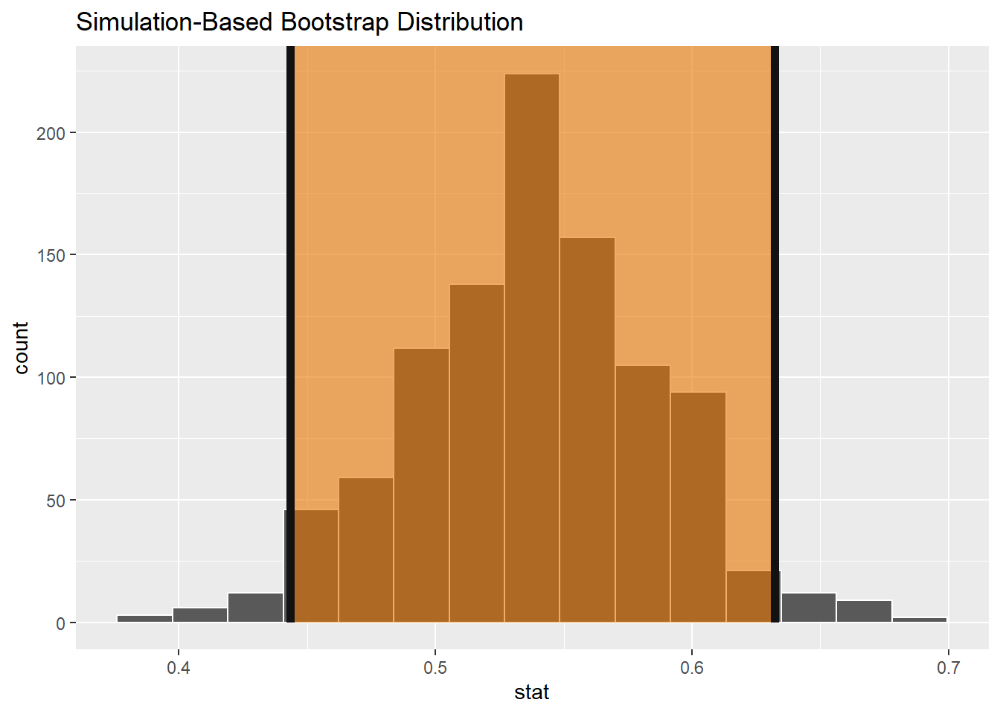
Inference
bootstrap_distribution |> get_ci()# A tibble: 1 × 2
lower_ci upper_ci
<dbl> <dbl>
1 0.443 0.632# default settings: 95% confidence, percentile method
NoteInference Interpretation
Among the Princeton students who have a strong opinion on whether or not pineapple is a good pizza topping, we are 95 percent confident that the true population proportion of students who like pineapple on pizza is in between 44 and 63 percent.
CautionDiscussion
This was a survey among SML 201 students
- relatively smaller sample size (\(n = 106\) students had a stated preference)
- Since 0.5 is contained within the confidence interval, this result is not significally different than simply flipping a fair coin.
Theory

But why are we using careful language like “We are 95 percent confident …”?
Scenario: 20 Ghosts
Remember when we faced the Dungeon Master and their army of 20 ghosts? Under the equal probabilities of a uniform distribution, we knew that we would face off against \(\mu = 10.5\) ghosts, on average.

Experiment
We could resample the outcome space and see what proportion of confidence intervals capture the [population mean] ghost.
Simulation
set.seed(201)
# d20
d20_df <- data.frame(d20_outcomes = 1:20)
# create data frame and allocate space
df_for_graph <- data.frame(
id = 1:26,
a = rep(NA, 26),
b = rep(NA, 26),
result = rep(NA, 26),
result_color = rep(NA, 26)
)
for(i in 1:26){
# bootstrap_distribution <- d20_df |>
# specify(response = d20_outcomes) |>
# generate(reps = 50, type = "bootstrap") |>
# calculate(stat = "mean")
# CI <- bootstrap_distribution |> get_ci()
this_sample <- sample(1:20, size = 10, replace = TRUE)
xbar <- mean(this_sample)
s <- sd(this_sample)
n <- length(this_sample)
E <- qt(0.975, df = n-1)*s/sqrt(n)
# df_for_graph$a[i] <- unlist(CI[1])
# df_for_graph$b[i] <- unlist(CI[2])
df_for_graph$a[i] <- xbar - E
df_for_graph$b[i] <- xbar + E
df_for_graph$result[i] <- ifelse(
df_for_graph$a[i] < 10.5 & 10.5 < df_for_graph$b[i],
"captured",
"not captured"
)
df_for_graph$result_color[i] <- ifelse(
df_for_graph$a[i] < 10.5 & 10.5 < df_for_graph$b[i],
"#23b63c",
"#ea0000"
)
capture_rate <- mean(df_for_graph$result == "captured",
na.rm = TRUE)
this_plot <- df_for_graph |>
filter(id %in% 1:i) |>
ggplot() +
# geom_vline(aes(xintercept = 10.5),
# color = "#ab9f8f", linewidth = 2) +
geom_segment(aes(x = a, y = id,
xend = b, yend = id,
color = result_color)) +
geom_point(aes(x = a, y = id, color = result_color),
size = 3) +
geom_point(aes(x = b, y = id, color = result_color),
size = 3) +
geom_image(aes(x = 10.5, y = id),
image = "ghostbusters_ghost.png") +
labs(title = "Confidence Intervals",
subtitle = paste0("capture rate: ",
round(100*capture_rate, 2),
" percent"),
caption = "SML 201",
x = "ghosts", y = "interval number") +
scale_color_manual(values = c("#23b63c", "#ea0000")) +
theme_minimal() +
theme(legend.position = "none")
ggsave(paste0("images/CI_plot", LETTERS[i], ".png"), this_plot)
}
png_files <- Sys.glob("images/CI_plot*.png")
gifski::gifski(
png_files,
"CI_animation.gif", #output file name
height = 1600, width = 1600, #you may change the resolution
delay = 1/2 #seconds
)
WarningDCP3
Probability Perceptions
We filled out a survey to judge the following terms on the scale from zero to 100 percent.
- certainly
- frequently
- likely
- maybe
- never
- often
- rarely
- possibly
- probably
- unlikely
TipPivot Tables
There are times when making a pivot table eases upcoming calculations. The resultant table may be arranged to be wider or longer.
- long: more rows and fewer columns
- wide: more columns and fewer rows
Three Words
subset
To ease understanding of this concept, let us look at just a small subset of the data.
prob_wide <- prob_df |>
select(rarely, likely, frequently) |>
slice(1:5)wide
| Probability Perceptions | ||
| wide table | ||
| rarely | likely | frequently |
|---|---|---|
| 15 | 95 | 60 |
| 15 | 80 | 70 |
| 10 | 50 | 70 |
| 30 | 75 | 70 |
| 15 | 65 | 80 |
| SML 201 | ||
pivot
prob_tall <- prob_wide |>
pivot_longer(
cols = everything(), #column selection
names_to = "term", #categorical labels
values_to = "percent" #numerical values
)tall
| Probability Perceptions | |
| tall table | |
| term | percent |
|---|---|
| rarely | 15 |
| likely | 95 |
| frequently | 60 |
| rarely | 15 |
| likely | 80 |
| frequently | 70 |
| rarely | 10 |
| likely | 50 |
| frequently | 70 |
| rarely | 30 |
| likely | 75 |
| frequently | 70 |
| rarely | 15 |
| likely | 65 |
| frequently | 80 |
| SML 201 | |
juxtaposed
| Probability Perceptions | ||
| wide table | ||
| rarely | likely | frequently |
|---|---|---|
| 15 | 95 | 60 |
| 15 | 80 | 70 |
| 10 | 50 | 70 |
| 30 | 75 | 70 |
| 15 | 65 | 80 |
| SML 201 | ||
| Probability Perceptions | |
| tall table | |
| term | percent |
|---|---|
| rarely | 15 |
| likely | 95 |
| frequently | 60 |
| rarely | 15 |
| likely | 80 |
| frequently | 70 |
| rarely | 10 |
| likely | 50 |
| frequently | 70 |
| rarely | 30 |
| likely | 75 |
| frequently | 70 |
| rarely | 15 |
| likely | 65 |
| frequently | 80 |
| SML 201 | |
prob_wide |>
gt() |>
cols_align(align = "center") |>
tab_footnote(footnote = "SML 201") |>
tab_header(
title = "Probability Perceptions",
subtitle = "wide table"
) |>
tab_style(
style = cell_text(weight = "bold"),
locations = cells_column_labels()
) |>
tab_style(
style = cell_fill(color = "tomato1"),
locations = cells_body(columns = rarely)
) |>
tab_style(
style = cell_fill(color = "purple1"),
locations = cells_body(columns = likely)
) |>
tab_style(
style = cell_fill(color = "skyblue1"),
locations = cells_body(columns = frequently)
)prob_tall |>
gt() |>
cols_align(align = "center") |>
tab_footnote(footnote = "SML 201") |>
tab_header(
title = "Probability Perceptions",
subtitle = "tall table"
) |>
tab_style(
style = cell_text(weight = "bold"),
locations = cells_column_labels()
) |>
tab_style(
style = cell_fill(color = "tomato1"),
locations = cells_body(rows = term == "rarely")
) |>
tab_style(
style = cell_fill(color = "purple1"),
locations = cells_body(rows = term == "likely")
) |>
tab_style(
style = cell_fill(color = "skyblue1"),
locations = cells_body(rows = term == "frequently")
)plotting
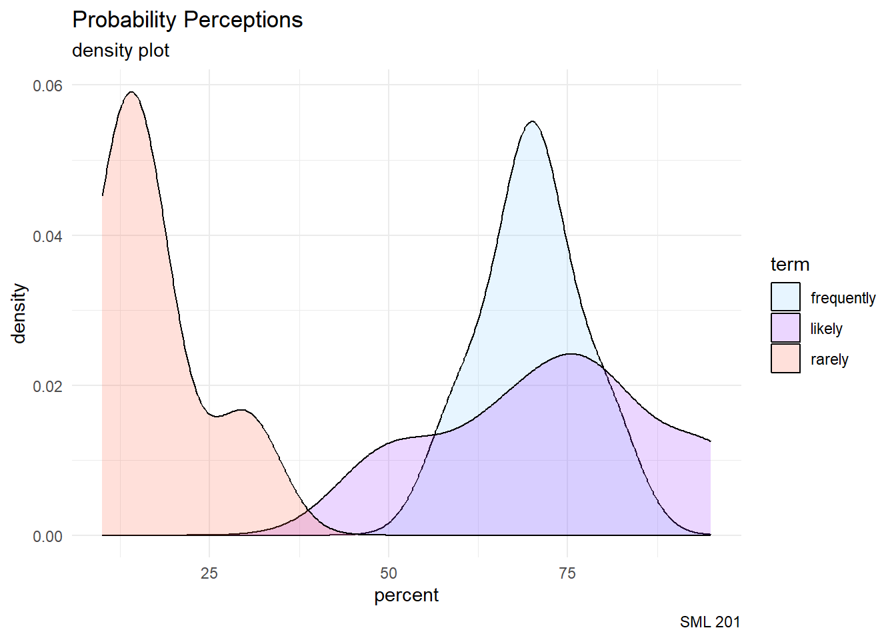
prob_tall |>
ggplot() +
geom_density(aes(x = percent, fill = term),
alpha = 0.201) +
labs(title = "Probability Perceptions",
subtitle = "density plot",
caption = "SML 201") +
scale_fill_manual(values = c("skyblue1", "purple1", "tomato1")) +
theme_minimal()reversion
prob_wide <- prob_tall |>
mutate(id = rep(1:5, each = 3)) |>
pivot_wider(id_cols = id,
names_from = term,
values_from = percent)Nine Words
# A tibble: 10 × 4
term q25 median q75
<chr> <dbl> <dbl> <dbl>
1 never 0 0 0
2 rarely 10 20 24.5
3 unlikely 10 20 25
4 possibly 30 40 50
5 maybe 50 50 50
6 likely 60 70 75
7 often 60 70 80
8 probably 65 70 80
9 frequently 70 75 80
10 certainly 100 100 100 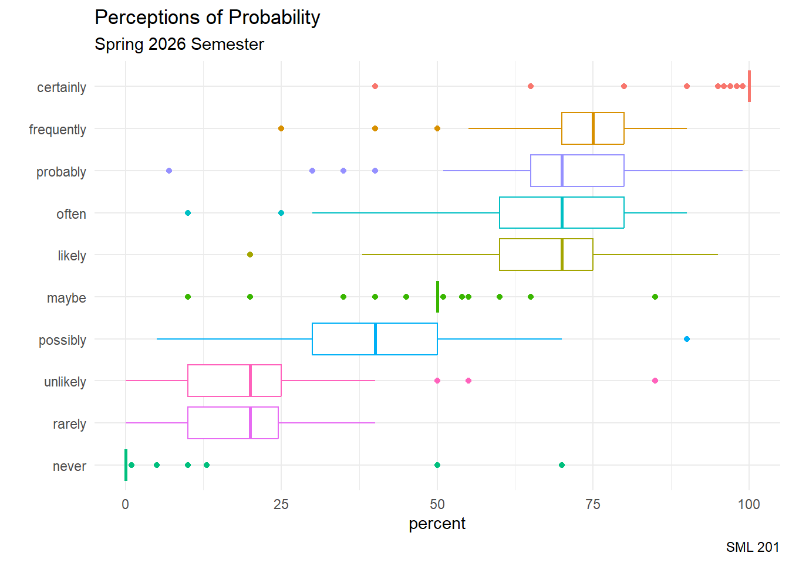
prob_long <- prob_df |>
pivot_longer(cols = everything(),
names_to = "term",
values_to = "percent")
prob_long |>
group_by(term) |>
summarize(q25 = quantile(percent, 0.25, na.rm = TRUE),
median = median(percent, na.rm = TRUE),
q75 = quantile(percent, 0.75, na.rm = TRUE)) |>
arrange(median, q25, q75)prob_long |>
group_by(term) |>
mutate(median = median(percent, na.rm = TRUE)) |>
ungroup() |>
ggplot() +
geom_boxplot(aes(x = percent,
y = fct_reorder(term, median),
color = term)) +
labs(title = "Perceptions of Probability",
subtitle = "Spring 2026 Semester",
caption = "SML 201",
x = "percent", y = "") +
theme_minimal() +
theme(legend.position = "none")Quo Vadimus?
- Due Friday (March 27)
- Precept 7
- Read Chapter 9 (quiz)
- Project 2 (due April 7)
- Exam 2 (April 23)
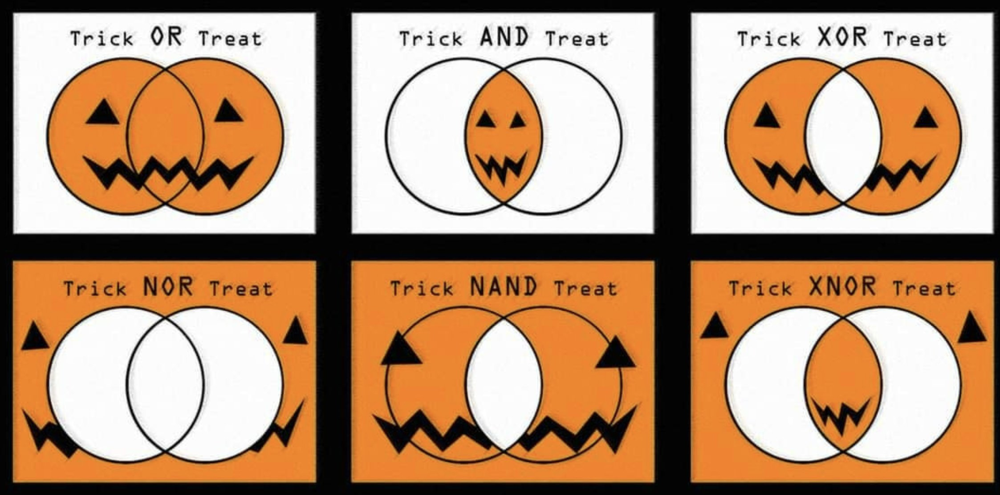
Footnotes
Note(optional) Additional Resources
NoteSession Info
sessionInfo()R version 4.5.2 (2025-10-31 ucrt)
Platform: x86_64-w64-mingw32/x64
Running under: Windows 10 x64 (build 19045)
Matrix products: default
LAPACK version 3.12.1
locale:
[1] LC_COLLATE=English_United States.utf8
[2] LC_CTYPE=English_United States.utf8
[3] LC_MONETARY=English_United States.utf8
[4] LC_NUMERIC=C
[5] LC_TIME=English_United States.utf8
time zone: America/New_York
tzcode source: internal
attached base packages:
[1] stats graphics grDevices utils datasets methods base
other attached packages:
[1] lubridate_1.9.4 forcats_1.0.0 stringr_1.5.1 dplyr_1.1.4
[5] purrr_1.1.0 readr_2.1.5 tidyr_1.3.1 tibble_3.3.0
[9] tidyverse_2.0.0 janitor_2.2.1 infer_1.0.9 gt_1.0.0
[13] ggtext_0.1.2 ggimage_0.3.5 ggplot2_4.0.0 bayesrules_0.0.2
loaded via a namespace (and not attached):
[1] RColorBrewer_1.1-3 tensorA_0.36.2.1 rstudioapi_0.17.1
[4] jsonlite_2.0.0 magrittr_2.0.3 magick_2.8.7
[7] farver_2.1.2 nloptr_2.2.1 rmarkdown_2.29
[10] fs_1.6.6 vctrs_0.6.5 minqa_1.2.8
[13] base64enc_0.1-3 htmltools_0.5.8.1 distributional_0.5.0
[16] curl_6.4.0 gridGraphics_0.5-1 sass_0.4.10
[19] StanHeaders_2.32.10 htmlwidgets_1.6.4 plyr_1.8.9
[22] zoo_1.8-14 commonmark_2.0.0 igraph_2.1.4
[25] mime_0.13 lifecycle_1.0.4 pkgconfig_2.0.3
[28] colourpicker_1.3.0 Matrix_1.7-4 R6_2.6.1
[31] fastmap_1.2.0 rbibutils_2.3 shiny_1.11.1
[34] snakecase_0.11.1 digest_0.6.37 crosstalk_1.2.2
[37] labeling_0.4.3 timechange_0.3.0 abind_1.4-8
[40] compiler_4.5.2 proxy_0.4-27 bit64_4.6.0-1
[43] fontquiver_0.2.1 withr_3.0.2 S7_0.2.0
[46] backports_1.5.0 inline_0.3.21 shinystan_2.6.0
[49] QuickJSR_1.8.0 pkgbuild_1.4.8 MASS_7.3-65
[52] rappdirs_0.3.3 gtools_3.9.5 loo_2.8.0
[55] tools_4.5.2 httpuv_1.6.16 threejs_0.3.4
[58] glue_1.8.0 nlme_3.1-168 promises_1.3.3
[61] gridtext_0.1.5 grid_4.5.2 checkmate_2.3.2
[64] reshape2_1.4.4 generics_0.1.4 gtable_0.3.6
[67] tzdb_0.5.0 class_7.3-23 hms_1.1.3
[70] utf8_1.2.6 xml2_1.3.8 pillar_1.11.0
[73] markdown_2.0 vroom_1.6.5 yulab.utils_0.2.4
[76] posterior_1.6.1 later_1.4.2 splines_4.5.2
[79] lattice_0.22-7 bit_4.6.0 survival_3.8-3
[82] tidyselect_1.2.1 fontLiberation_0.1.0 miniUI_0.1.2
[85] knitr_1.50 fontBitstreamVera_0.1.1 reformulas_0.4.1
[88] gridExtra_2.3 litedown_0.7 V8_6.0.5
[91] groupdata2_2.0.5 stats4_4.5.2 xfun_0.52
[94] rstanarm_2.32.1 matrixStats_1.5.0 DT_0.34.0
[97] rstan_2.32.7 stringi_1.8.7 ggfun_0.2.0
[100] yaml_2.3.10 boot_1.3-32 evaluate_1.0.4
[103] codetools_0.2-20 gdtools_0.5.0 ggplotify_0.1.3
[106] cli_3.6.5 RcppParallel_5.1.10 shinythemes_1.2.0
[109] xtable_1.8-4 systemfonts_1.3.2 Rdpack_2.6.4
[112] Rcpp_1.1.0 parallel_4.5.2 rstantools_2.4.0
[115] dygraphs_1.1.1.6 bayesplot_1.14.0 lme4_1.1-37
[118] ggiraph_0.9.6 scales_1.4.0 xts_0.14.1
[121] e1071_1.7-16 crayon_1.5.3 rlang_1.1.6
[124] shinyjs_2.1.0